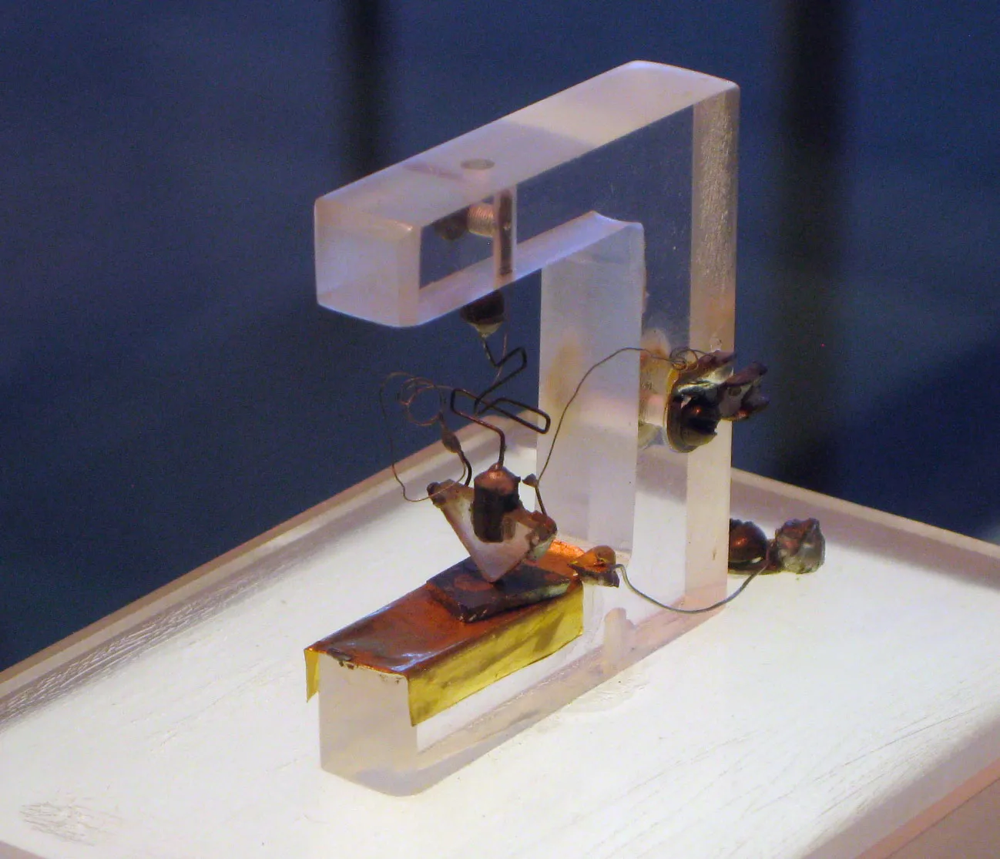
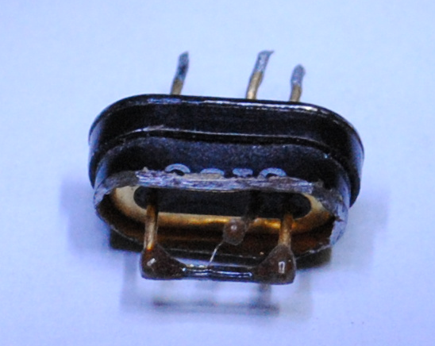

1947
is when John Bardeen, William Shockley and Walter Brattain created the first transistor
1948
is when AT&T Bell Labs publicly announced the invention of the transistor
1951
is when William Shockley invented the junction transistor (out of spite). It was more efficient than the point contact transistor and was the main design moving forward.
1956
is the year that they won the Nobel Prize in physics for their research on transistors.